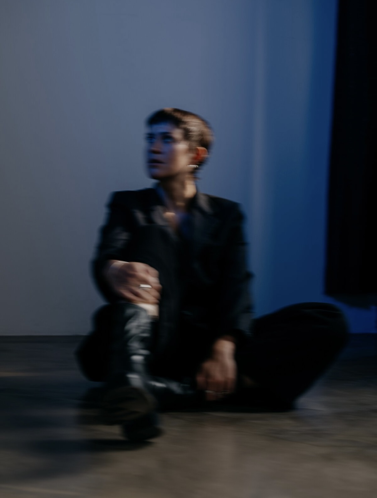

AZIL
Listen to AZIL, co-founder of Leipzig's event series MANIAC, where she passionately shapes the city's club culture in a progressive direction. With her distinct sound, she seamlessly merges diverse subgenres with rolling kicks, energetic and hypnotic beats, crafting a dynamic narrative that mirrors her personal journey on the dance floor. She aims to keep the crowd grooving with her carefully curated selection, promising a delightful fusion of rhythms.